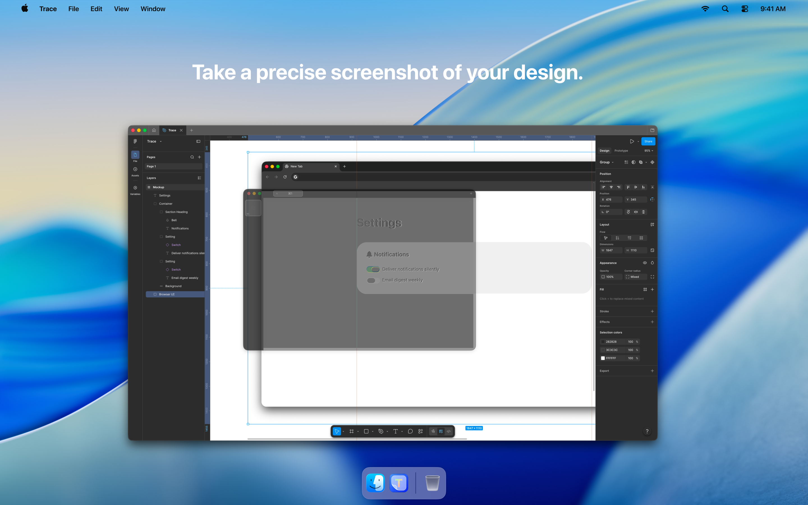
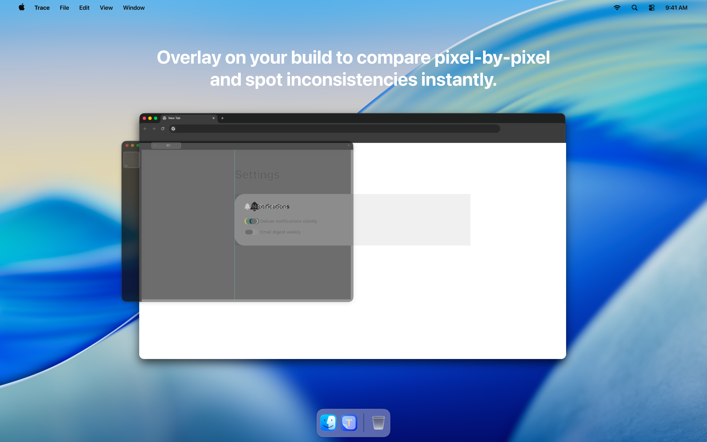
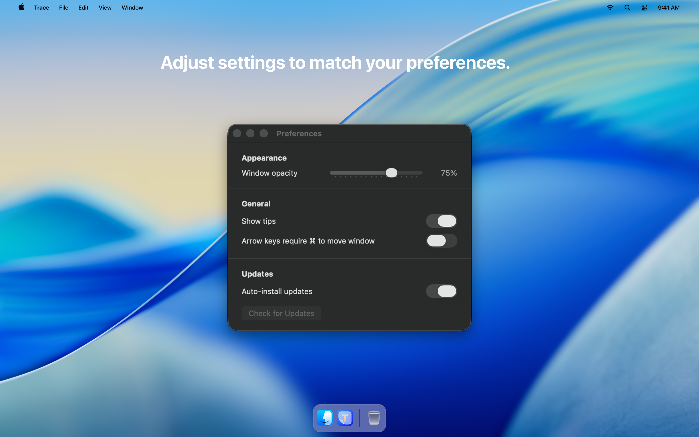

Design and code.
Aligned.
Overlay screenshots on any app and compare pixel by pixel. Built for macOS.



Stop Clicking.
Start Flying.
Keyboard shortcuts that actually save you time.
⌘+G
Capture Screenshot
⌘+\
Toggle Thumbnail Sidebar
⌘+1
Switch to Tab 1
Works with 1–9 keys.
↑
Move by 1px
Shift+↑
Move by 10px
⌘+T
New Tab
⌘+W
Close Current Tab
⌘+I
Toggle Inversion
Switch between normal and regular screenshot inversions.
⌘+D
Toggle Theme
Switch between Light and Dark modes.
Trace
Download for macOSRequires macOS 26 or later.